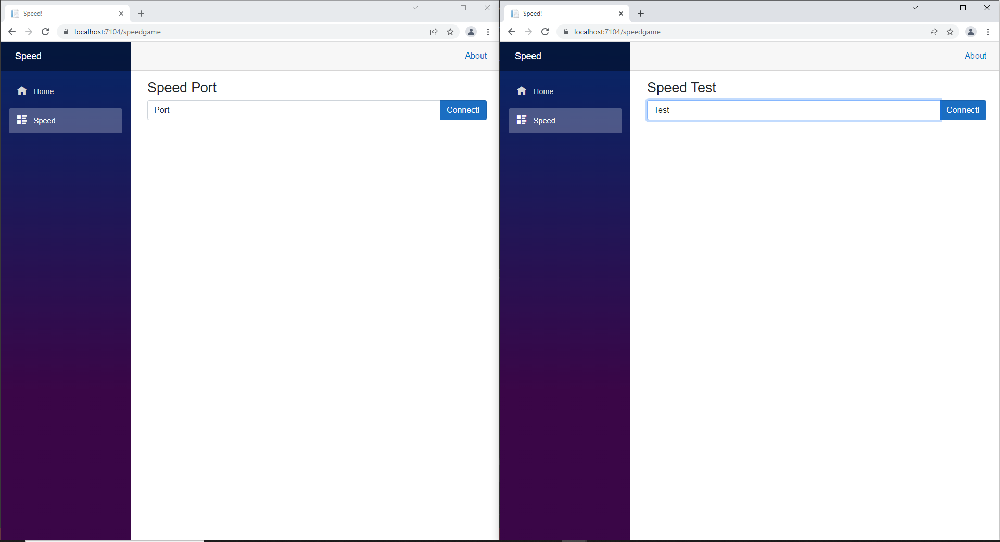
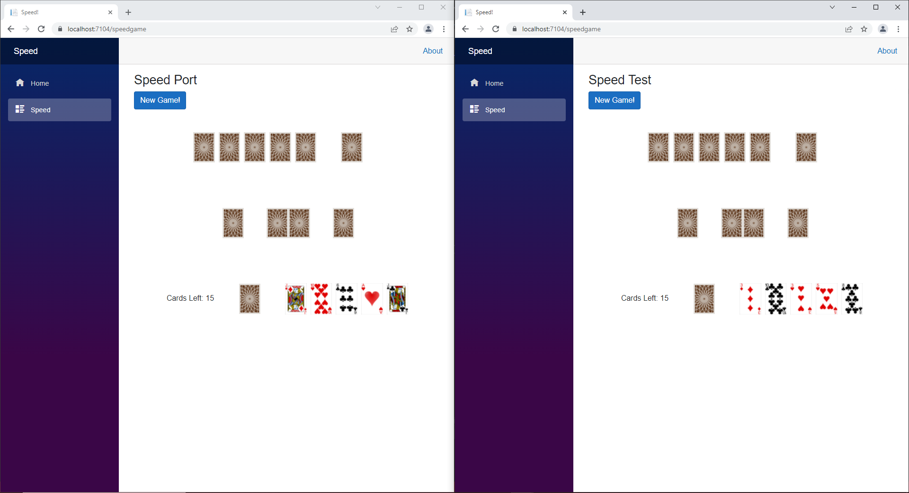
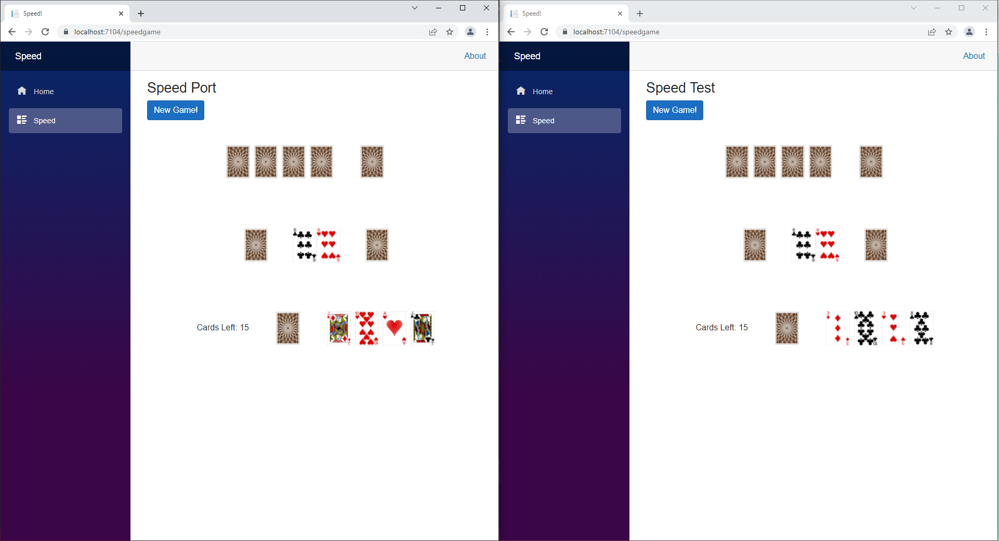

Speed Game
This project was a group one with members Tage Higley, Dennis Chase, Hunter Olson, and Cecilia Harvey. For this project we were assigned to make a two player game of speed on the same browser. This was my first experience with dealing with and updating two users.
Before playing the game each user enters their name and connects to each other. After both users connect they start the game by pressing one of the middle decks. After that it's just a normal game of speed. When a player makes a move it is sent to the server, updates any relevent data, and sends the updated data to all users. If the game comes to a stalemate or the game ends both the players can start a new game.
I designed the layout of the cards on the front end. One of the critera of the project was that we had to make it mobile friendly. I did this with the cards by using Bootstrap and percentages for the width. I also implemented the draw card, play card, and flip new card functions. I originally did this in the shared folder and later moved it to the server folder so that we only have one instance of the deck. Lastly I applied the knowledge that Tage Higley gained about SignalR to our project. This made it so that the client's actions could be communicated to the server and back to the other client.
In previous projects SignalR was involved but I didn't help with it. So this project I decided that I would figure it out. After doing some research and talking to Tage Higley I was able to wrap my head around how it works.
The tool we used for this project includes ASP.NET Core 6.0, Web Sockets with SignalR, and Visual Studio.
  